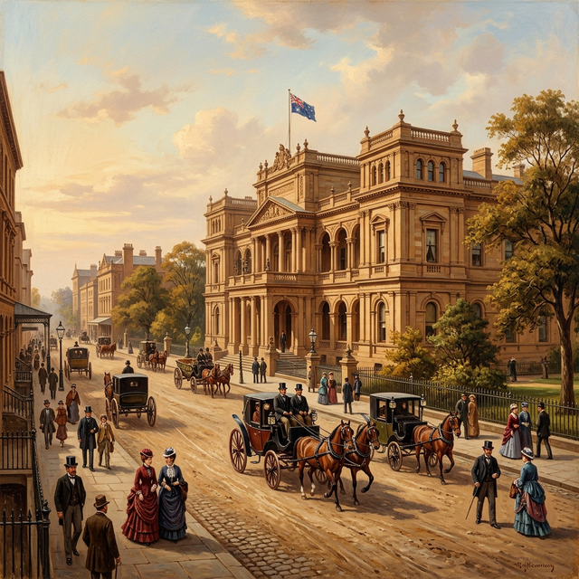
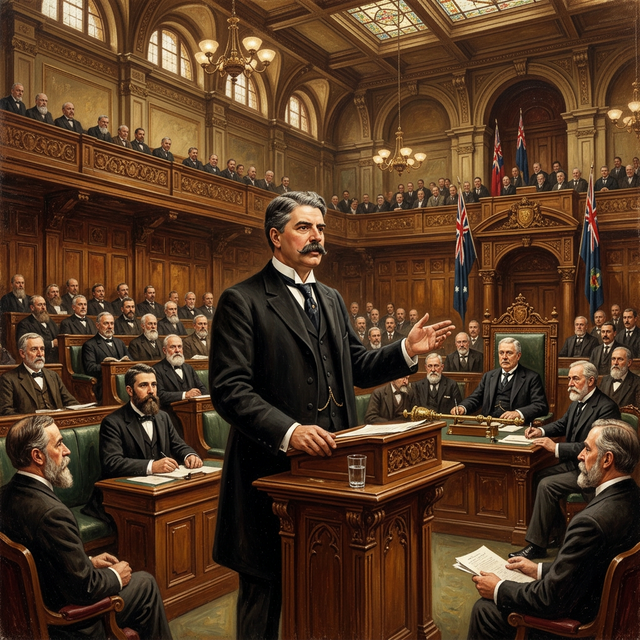

Australia's First Prime Minister
Sir Edmund Barton was the man chosen to lead the first government of our new nation. He spent ten years traveling the country to convince people that Australia should be one.
Growing Up in Sydney
Edmund Barton was born in 1849 in Sydney. His friends called him "Toby." He was a very clever student who loved reading and learned how to speak very well in front of others. This is called oratory.
He went to the University of Sydney and became a lawyer. He was also a huge fan of cricket! He wasn't very good at catching the ball, but he loved the game and even helped organize big matches between the different colonies.
Entering Politics
Barton was elected to parliament when he was still quite young. He was so respected that he became the youngest Speaker in the history of New South Wales! He had to make sure all the other politicians followed the rules during their meetings.
Barton loved meeting people and telling stories. He was often found at clubs in Sydney, laughing and talking with artists and writers. He was very popular and had a great sense of humour.

Stumping the Country
When Henry Parkes gave his famous Tenterfield speech, Barton knew he had to help. He spent three years traveling around New South Wales in a horse-drawn buggy, speaking at over 300 meetings! This was called "stumping the country."
He told people that it was silly to have different laws and taxes for each colony. He famously said that we should have "a nation for a continent, and a continent for a nation." This helped everyone understand why Federation was a good idea.

The Constitution
Barton was one of the leaders who wrote the Constitution. This is the most important book in Australia because it describes how our government works. He worked day and night with other leaders to make sure the rules were fair for all the colonies.
In 1900, he even traveled to London to meet with the leaders of the British government. He had to convince them to let Australia become its own country without changing any of the rules we had written.

Leading the Way
On January 1, 1901, Barton became Australia's very first Prime Minister. He led the first team of government ministers and helped set up the High Court and the public service.
He wasn't always very good at the boring parts of the job, like paperwork, but he was great at bringing people together. He served as Prime Minister for nearly three years before becoming a judge on the High Court.

Barton's Path to Power
Click the dates to see how "Toby" became the leader of a nation.
1849
Born in Sydney, New South Wales.
1883
Becomes the youngest Speaker in Parliament.
1891
Helps write the first draft of the Australian Constitution.
1897
Elected as the leader of the Federal Convention.
1901
Becomes Australia's first Prime Minister.
1903
Retires as PM to become a High Court Judge.
Want to Learn More?
Visit our detailed biography page for in-depth information, including comprehensive life history and academic references.
📖 Read Full Biography
Detailed biography with sources and references